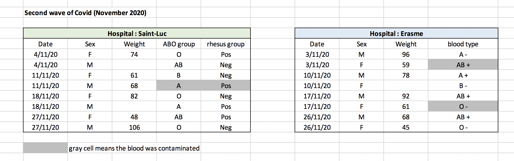

Chapter 1 Data organisation with Spreadsheets
Learning Objectives
- Undertand spreadsheets strenghts and weaknesses
- Learn about common spreadsheet errors and how to correct them.
- Understand how to organize the data according to tidy data principles.
- Learn about text-based spreadsheet formats such as the comma-separated (csv) or tab-separated formats (tsv).
Keypoint
- Good data organization is the foundation of any research project.
1.1 Spreadsheet programs
Many spreadsheet programs are available. Since most participants
use Excel as their primary spreadsheet program, this lesson will
make use of Excel examples.
Spreadsheet programs encompass a lot of the things we need to be able to do as researchers (Data entry, organizing data, subsetting and sorting data, statistical analysis, plotting…).
- Spreadsheets strenghts
Spreadsheets programs are good for data entry as they use tables to represent and display data.
- Spreadsheets weaknesses
Spreadsheets are good for data entry, but, in reality we tend to use spreadsheet programs for much more than data entry. We use them to create data tables for publications, to generate summary statistics, and make figures.
– Generating tables for publications in a spreadsheet is not optimal. Often, we report key summary statistics in a way that is not really meant to be read as data, involving for example special formatting (merging cells, creating borders, making the table pretty).
– Generating statistics and figures, should be used with caution: because of the graphical, drag and drop nature of spreadsheet programs, it can be very difficult, if not impossible, to reproduce your steps (much less retrace anyone else’s), particularly if your stats or figures require you to do more complex calculations.
– If you want to change a parameter or run an analysis with a new dataset, you usually have to redo everything by hand.
– Furthermore, in doing calculations in a spreadsheet, it’s easy to accidentally apply a slightly different formula to multiple adjacent cells. When using a command-line based statistics program like R, it’s practically impossible to apply a calculation to one observation in your dataset but not another unless you’re doing it on purpose.
Despite the fact that it is not optimal, you might want to use a spreadsheet program to produce “quick and dirty” calculations or figures, and data cleaning will help you use some of these features. Spreadsheet programs can also be useful to put your data in a better format prior to importation into a statistical analysis program.
In this lesson we will see how to organise data into tables in a standardised way to ensure efficient downstream analysis.
1.2 Formatting data tables in spreadsheets
The most common mistake made is treating spreadsheet programs like lab notebooks (for example adding notes in the margin, or creating a spatial layout of data). As humans, we can interpret these things, but computers will not be able to see how the data fits together. Computers allow us to analyze data in much more effective and faster ways but to use that power, we have to set up our data for the computer to be able to understand it (and computers are very literal).
This is why it’s extremely important to set up well-formatted tables from the outset - before you even start entering data from your very first preliminary experiment. Data organization is the foundation of your research project. It can make it easier or harder to work with your data throughout your analysis, so it’s worth thinking about when you’re doing your data entry or setting up your experiment. You can set things up in different ways in spreadsheets, but some of these choices can limit your ability to work with the data in other programs or have the you-of-6-months-from-now or your collaborator work with the data.
1.2.1 Keeping track of your analyses
During data clean up or analyses, it’s very easy to end up with a spreadsheet that looks very different from the one you started with. To be able to reproduce your analyses or figure out what you did when a reviewer or instructor asks for a different analysis, you should
create a new file with your cleaned or analyzed data. Don’t modify the original dataset, or you will never know where you started!
keep track of the steps you took in your clean up or analysis. You should track these steps as you would any step in an experiment. We recommend that you do this in a plain text file stored in the same folder as the data file.
This might be an example of a spreadsheet setup:

While versioning is out of scope for this course, you can look at the Carpentries lesson on ‘Git’ to learn how to maintain version control over your data. See also this blog post for a quick tutorial or Perez-Riverol et al. (2016Perez-Riverol, Yasset, Laurent Gatto, Rui Wang, Timo Sachsenberg, Julian Uszkoreit, Felipe da Veiga Leprevost, Christian Fufezan, et al. 2016. “Ten Simple Rules for Taking Advantage of Git and GitHub.” PLOS Computational Biology 12 (7): 1–11. https://doi.org/10.1371/journal.pcbi.1004947.) for a more research-oriented use-case.
1.2.2 Structuring data in spreadsheets
The cardinal rules of using spreadsheet programs for data:
- Put all your variables in columns - the thing you’re measuring, like ‘weight’ or ‘temperature’.
- Put each observation in its own row.
- Don’t combine multiple pieces of information in one cell. Sometimes it just seems like one thing, but think if that’s the only way you’ll want to be able to use or sort that data.
- Leave the raw data raw - don’t change it!
- Export the cleaned data to a text-based format like CSV (comma-separated values) format. This ensures that anyone can use the data, and is required by most data repositories.
For instance, we have the following data from patients that visited several hospitals.

The problem is that the ABO and rhesus groups are in the same Blood
type column. So, if we wanted to look at all observations of the A
group or look at weight distributions by ABO group, it would be tricky
to do this using this data setup. If instead we put the ABO and rhesus
groups in different columns, you can see that it would be much easier.

► Question
We’re going to take a messy data and describe how we would clean it up.
Download a messy data by clicking here.
Open up the data in a spreadsheet program.
You can see that there are two tabs. The data contains various clinical variables recorded in various hospitals in Brussels during the first and second COVID-19 waves in 2020. As you can see, the data have been recorded differently during the march and november waves. Now you’re the person in charge of this project and you want to be able to start analyzing the data.
With the person next to you, identify what is wrong with this spreadsheet. Also discuss the steps you would need to take to clean up first and second wave tabs, and to put them all together in one spreadsheet.
After you go through this exercise, we’ll discuss together about what was wrong with this data and how we would fix it.
Once you have tidied up the data, answer the following questions:
- How many men and women took part in the study?
- How many A, AB, and B types have been tested?
- As above, but disregarding the contaminated samples?
- How many samples have been tested in the different hospitals?
Isn’t it easier to answer with cleaned data?
► Solution
An excellent reference, in particular with regard to R scripting is the Tidy Data paper Wickham (2014Wickham, Hadley. 2014. “Tidy Data.” Journal of Statistical Software, Articles 59 (10): 1–23. https://doi.org/10.18637/jss.v059.i10.).
1.3 Common Spreadsheet Errors
If you are aware of the common errors and the possible negative effect on downstream data analysis and result interpretation, it might motivate you to try and avoid them. Small changes in the way you format your data can have a great impact on efficiency and reliability when it comes to data cleaning and analysis.
- Using multiple tables
- Using multiple tabs
- Not filling in zeros
- Using problematic null values
- Using formatting to convey information
- Placing comments in cells
- Placing units in cells
- Entering more than one piece of information in a cell
- Using problematic field names
- Using special characters in data
- Inclusion of metadata in data table
1.3.1 Using multiple tables
Avoid creating multiple data tables within one spreadsheet. This confuses the computer, so don’t do this!
When you create multiple tables within one spreadsheet, from the computer’s point of view, you’re drawing false associations between things!

In the example above, the computer will see (for example) the third row and assume that all columns refer to the same patient.
1.3.2 Using multiple tabs
Example: making separate tab for each covid wave.
The problem is that when you create extra tabs, the computer doesn’t see the connections in the data. To allow these connections, you would have to explicitly tell the computer how to combine tabs by using spreadsheet-specific functions or by scripting.
Furthermore, you are more likely to accidentally add inconsistencies to your data if each time you take a measurement, you start recording data in a new tab.
The next time you want to create another tab or table, ask yourself if you could avoid adding this tab simply by adding a new column to your original spreadsheet.
1.3.3 Not filling in zeros
Imagine you’re measuring something that is usually a zero. Why bother writing in the number zero in that column, when it’s mostly always zeros?
There’s a difference between a zero and a blank cell in a spreadsheet.
A zero is actually data. You measured or counted it.
A blank cell means that it wasn’t measured and the computer will interpret it as a missing value.
A statistical program will mis-interpret blank cells that you intend to be zeros. This might cause problems with subsequent calculations or analyses.
It’s very important to record zeros as zeros and truly missing data as nulls.
1.3.4 Using problematic null values
Example: using -999, 999, or 0 to represent missing data.
There are a few reasons why null values get represented differently within a dataset.
Sometimes confusing null values are automatically recorded from the measuring device.
Other times different null values are used to convey different reasons why the data isn’t there. This is important information to capture, but here one column is used to capture two pieces of information. It would be good here to create a new column like ‘data_missing’ and use that column to capture the different reasons.
Whatever the reason, it’s a real problem, as many statistical programs will not recognize that these are intended to represent missing (null) values.
It is essential to use a clearly defined and consistent null indicator.
Blanks (most applications) and “NA” (for R) are good choices. Avoid things like “none”, “no data”, “na” (in lowercase), “missing”, or “-”.
White et al. (2013White, Ethan P., Elita Baldridge, Zachary T. Brym, Kenneth J. Locey, Daniel J. McGlinn, and Sarah R. Supp. 2013. “Nine Simple Ways to Make It Easier to (Re)use Your Data.” PeerJ PrePrints 1 (July): e7v2. https://doi.org/10.7287/peerj.preprints.7v2.) explain good choices for indicating null values for different software applications in their article:

1.3.5 Using formatting to convey information
Example 1:
leaving blank rows to indicate separations in data.
highlighting cells, rows or columns that should be excluded from an analysis
 => Create a new field to encode which data should be
excluded.
=> Create a new field to encode which data should be
excluded.

Example 2: merging cells.

Merged cells will make your data unreadable by statistics software.
Solution: Restructure your data in such a way that you will not need to merge cells to organize your data.
1.3.7 Placing units in cells
- Don’t include units in cells

- Ideally, all the values you place in one column should be in the same unit. If for some reason they are not, create another column specifying the units.
1.3.8 Entering more than one piece of information in a cell
Example: Recording ABO and Rhesus groups in one cell, such as A+, B+, A-, …
Solution: Don’t include more than one piece of information in a cell. This will limit the ways in which you can analyze your data. Include one column the ABO group and one for the Rhesus group.
1.3.9 Using problematic field names
Choose descriptive field names, but be careful not to include spaces, numbers, or special characters of any kind:
Spaces can be misinterpreted by parsers that use whitespace as delimiters
some programs don’t like field names that start with numbers.
Underscores (_) are a good alternative to spaces (ex: sample_name), or writing
names in camel case (ex: SampleName) to improve
readability.
Remember that abbreviations that make sense at the moment may not be so obvious in 6 months! the chances that you will still remember that the variable “sglmemgp” means “single member of group” after a few months, a year, or more are slim.
Including the units in the field names avoids confusion.
Examples
| Good Name | Good Alternative | Avoid |
|---|---|---|
| Max_temp_C | MaxTemp | Maximum Temp (°C) |
| Precipitation_mm | Precipitation | precmm |
| Mean_year_growth | MeanYearGrowth | Mean growth/year |
| sex | sex | M/F |
| weight | weight | w. |
| cell_type | CellType | Cell Type |
| Observation_01 | first_observation | 1st Obs |
1.3.10 Using special characters in data
Example: when writing longer text in a cell, people often include line breaks, em-dashes, vertical tabs, etc in their spreadsheet. (This can also occurs accidentally by copying text from other applications…) Also, when copying data in from applications such as Word, formatting and fancy non-standard characters (such as left- and right-aligned quotation marks) are included.
When exporting this data into other softwares, dangerous things may occur, such as lines being cut in half and other encoding errors.
Solution: Include in cells only text and spaces.
1.3.11 Inclusion of metadata in data table
Example: You add a legend at the top or bottom of your data table explaining column meaning, units, exceptions, etc.
Solution: Recording data about your data (“metadata”) is essential. However,
Metadata should be stored as a separate file in the same directory as your data file, preferably in plain text format with a name that clearly associates it with your data file.
Because metadata files are free text format, they also allow you to encode comments, units, information about how null values are encoded, etc. that are important to document but can disrupt the formatting of your data file.
Additionally, file or database level metadata describes how files that make up the dataset relate to each other; what format are they in; and whether they supercede or are superceded by previous files. A folder-level readme.txt file is the classic way of accounting for all the files and folders in a project.
(Text on metadata adapted from the online course Research Data MANTRA by EDINA and Data Library, University of Edinburgh. MANTRA is licensed under a Creative Commons Attribution 4.0 International License.)
Take-home message
Never modify your raw data. Always make a copy before making any changes.
Keep track of all of the steps you take to clean your data in a plain text file.
Organize your data according to tidy data principles.
1.4 Exporting data
Storing the data you’re going to work with for your analyses in Excel default file format is not a good idea. Why?
Because it is a proprietary format, and it is possible that in the future, technology won’t exist, or will become sufficiently rare, to make it inconvenient, if not impossible, to open the file.
Other spreadsheet software may not be able to open files saved in a proprietary Excel format.
Different versions of Excel may handle data differently, leading to inconsistencies. Dates is a well-documented example of inconsistencies in data storage.
The above points also apply to other formats such as open data formats used by LibreOffice / Open Office. These formats are not static and do not get parsed the same way by different software packages.
Finally, more journals and grant agencies are requiring you to deposit your data in a data repository, and most of them don’t accept Excel format. It needs to be in one of the formats discussed below.
You will resolve these problems by storing data in a universal, open, and static format such as:
TSV format (plain text files where the columns are separated by tabs, hence ‘tabs separated values’ or TSV.)
CSV format (plain text files where the columns are separated by commas, hence ‘comma separated values’ or CSV.)
Advantages:
These files can be read using just about any software, including plain text editors like TextEdit or NotePad.
Data in a CSV file can also be easily imported into other formats and environments, such as SQLite and R.
We’re not tied to a certain version of a certain expensive program.
Most spreadsheet programs can save in CSV or TSV very easily.
To save an Excel file in CSV format:
- From the top menu select ‘File’ and ‘Save as’.
- In the ‘Format’ field, from the list, select ‘Comma Separated
Values’ (
*.csv). - Check the file name and the location where you want to save it and hit ‘Save’.
An important note for backwards compatibility: you can open CSV files in Excel!
A note on R and xls: There are R packages that can read xls
files (as well as Google spreadsheets). It is even possible to access
different worksheets in the xls documents.
Caveats on commas
In some datasets, the values may include commas. In that case, Excel will likely display incorrect data.
This is because the commas which are a part of the data values will be interpreted as delimiters.
For example, our data might look like this:
gene,chromosome_name,product
Pink1,4,PTEN induced putative kinase 1
Mettl16,11,methyltransferase like 16, transcript variant X3
Fam193b,13,family with sequence similarity 193, member B
Rtca,3,RNA 3'-terminal phosphate cyclase
Fgfbp1,5,fibroblast growth factor binding protein 1, transcript variant X2
Cfp,X,complement factor properdin
Nid1,13,nidogen 1For the gene Mettl16, the product record includes a comma: methyltransferase like 16, transcript variant X3. If we try to read the above into Excel, we will
get something like this:
Figure 1.1: The risks of having commas inside comma-separated data.

The value for product was split into two columns.
This can propagate to a number of further errors:
For example, the extra column will be interpreted as a column with many missing values (and without a proper header).
In addition to that, the value in column
productfor the Mettl16 gene is now incorrect.
You can avoid the problem discussed above by putting the values in quotes (""). Applying this rule, our data might look like this:
gene,chromosome_name,product
"Pink1","4","PTEN induced putative kinase 1"
"Mettl16,"11","methyltransferase like 16, transcript variant X3"
"Fam193b","13","family with sequence similarity 193, member B"
"Rtca","3","RNA 3'-terminal phosphate cyclase"
"Fgfbp1","5","fibroblast growth factor binding protein 1, transcript variant X2"
"Cfp","X","complement factor properdin"
"Nid1","13","nidogen 1"Excel will only use commas that fall outside of quotation marks as delimiting characters.
Alternatively, you can use another delimiter when working in a spreadsheet1 This is of course particularly relevant in European countries where the comma is used as a decimal separator. In such cases, the default value separator in a csv file will be the semi-colon (;), or values will be systematically quoted. containig many commas. In this case, consider using TSV files with tabs delimiters.
Take-home message
Data stored in common spreadsheet formats will often not be read correctly into data analysis software, introducing errors into your data.
Exporting data from spreadsheets to formats like CSV or TSV puts it in a format that can be used consistently by most programs.
Page built: 2021-09-24
1.3.6 Placing comments in cells
Most analysis software can’t see Excel comments.
Create another column to add notes if neeeded.